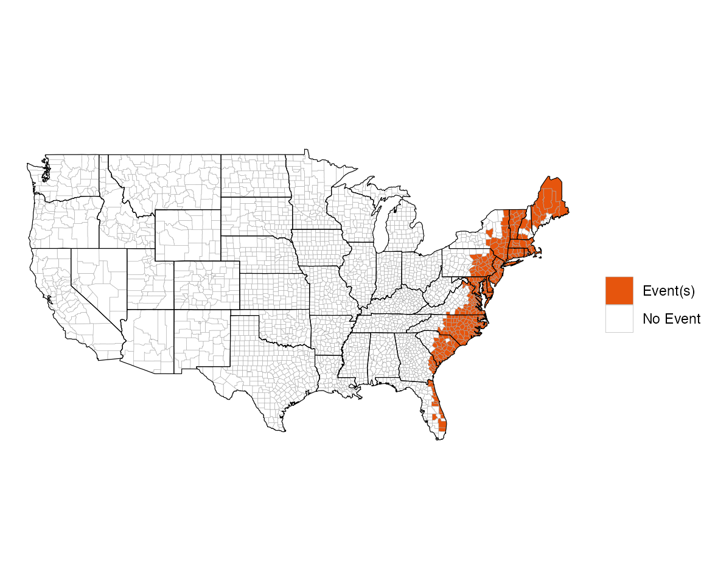
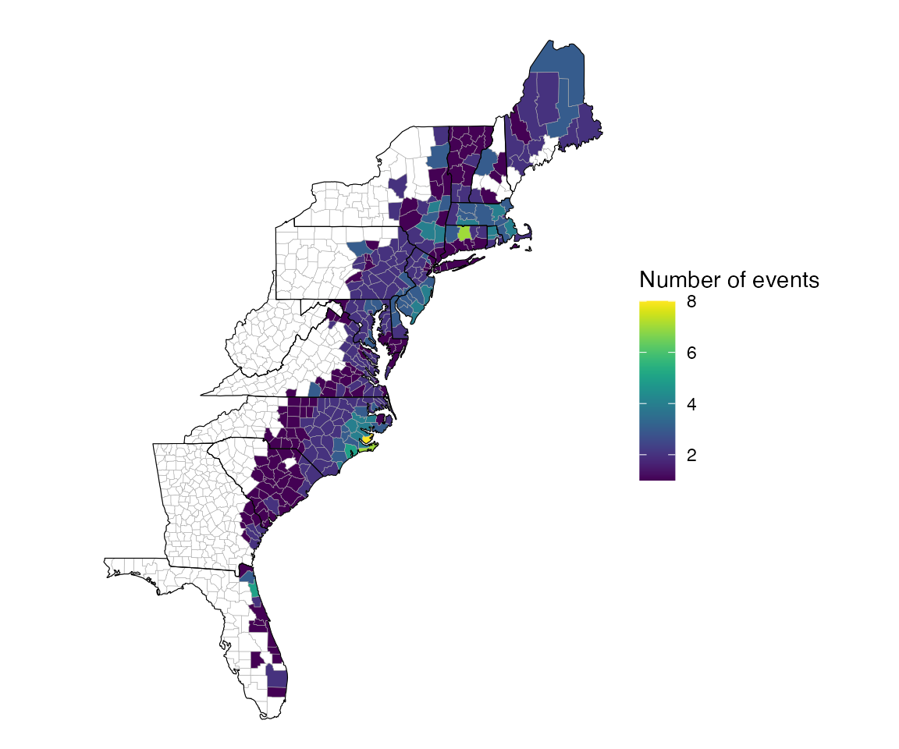
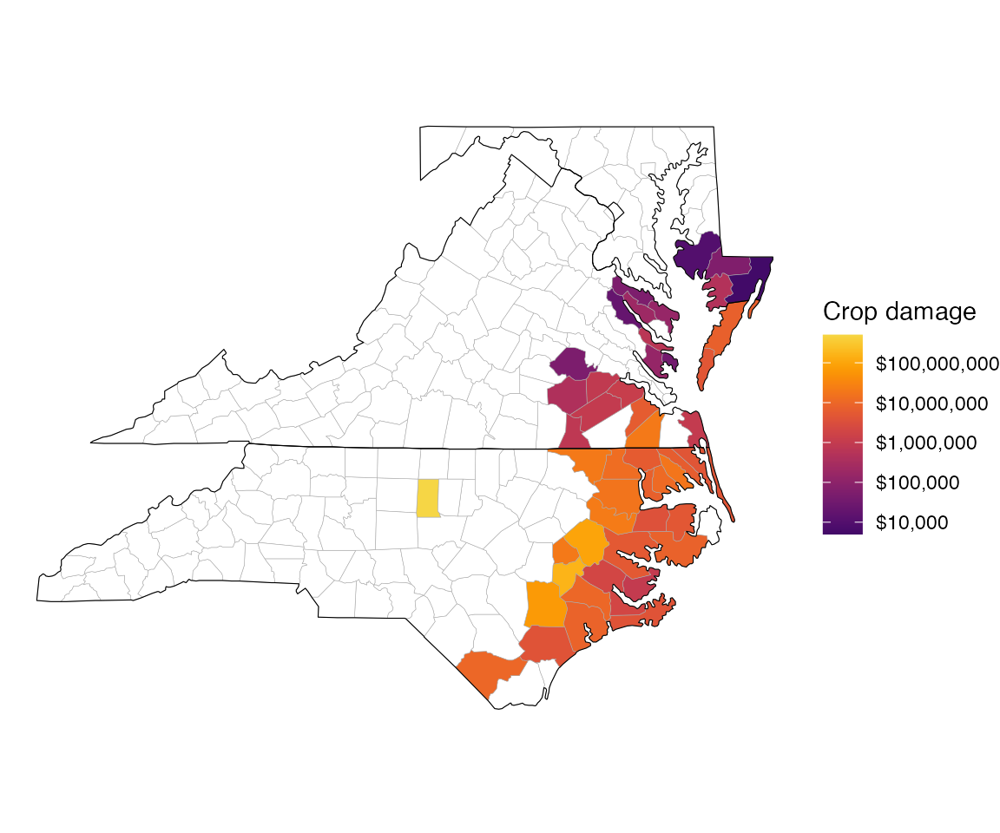
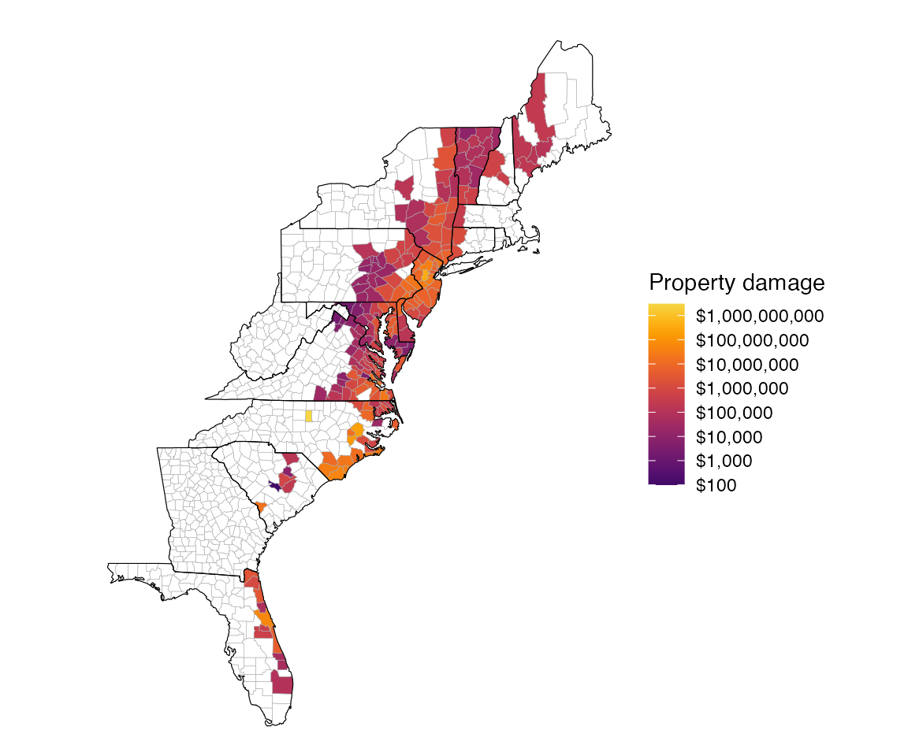
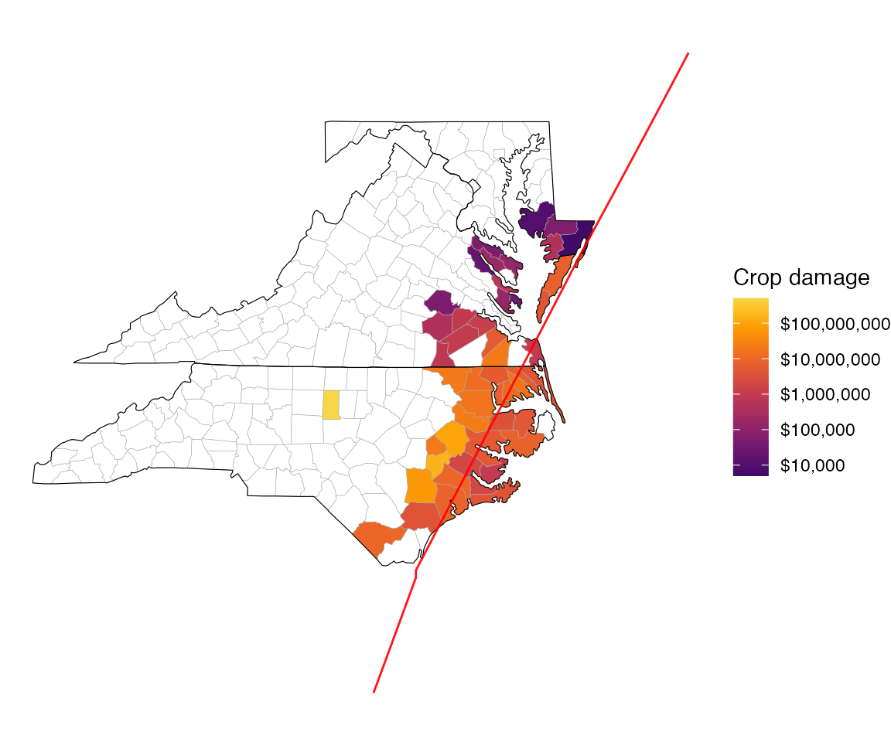

Mapping storm events
Brooke Anderson, Ziyu Chen, and Jordan Robinson
Source:vignettes/02_map_events.Rmd
02_map_events.RmdWith map_events, one of the primary functions in
noaastormevents, users can map information in the dataframe
returned by the find_events function. Things that can be
mapped include:
- “any events”: Map whether or not a county had any listed events
- “number of events”: Map the number of events listed for a county
- “direct deaths”: Map the total count of direct deaths across all events listed for a county
- “direct injuries”: Map the total count of direct injuries across all events listed for a county
- “indirect deaths”: Map the total count of direct deaths across all events listed for a county
- “indirect injuries”: Map the total count of direct injuries across all events listed for a county
- “property damage”: Map the total property damage across all events listed for a county
- “crop damage”: Map the total crop damage across all events listed for a county
While the maps for property and crop damage use a logarithmic scale, while others use an untransformed scale.
Because the first argument of map_events is a dataframe,
you can also use the pipe operator (%>%, from the
dplyr package) to pipe the results of a call to
find_events directly into map_events, as shown
in the next example.
To create a map of all events within 300 km of the track of Hurricane Floyd with start dates in a five-day window of the storm’s closest date to each county, and to map all continental states, you can run:
floyd_events <- find_events(storm = "Floyd-1999", dist_limit = 300)
floyd_events %>%
map_events(states = "all")
The map_events function includes a states
option, to allow the user to limit the map to a subset of states (only
states in the continental US can be included). This option also allows
the inputs of “east” (the default, maps only states in the eastern half
of the United States) and “all” (maps all states in the continental
US).
If you instead would like to limit the map to states along the East Coast and plot the number of reported events per county, you could instead run:
floyd_events %>%
map_events(plot_type = "number of events",
states = c("florida", "georgia", "south carolina", "north carolina",
"virginia", "maryland", "delaware", "pennsylvania",
"new jersey", "new york", "connecticut", "rhode island",
"massachusetts", "vermont", "new hampshire", "maine",
"west virginia"))
The maps for crop and property damage use a logarithmic scale, which typically shows differences in these measurements better than an untransformed scale. For example, here is the call and resulting map to map crop damage associated with Hurricane Floyd in North Carolina, Virginia, and Maryland:
floyd_events %>%
map_events(plot_type = "crop damage",
states = c("north carolina", "virginia", "maryland"))
Property damage can be mapped in a similar way:
floyd_events %>%
map_events(plot_type = "property damage",
states = c("florida", "georgia", "south carolina", "north carolina",
"virginia", "maryland", "delaware", "pennsylvania",
"new jersey", "new york", "connecticut", "rhode island",
"massachusetts", "vermont", "new hampshire", "maine",
"west virginia"))
The track of a tropical storm can be added to a map by specifying the
name of the storm with the storm argument and setting
add_tracks to TRUE. For example, the track of
Hurricane Floyd can be added to a map of crop damage in North Carolina,
Virginia, and Maryland from the example dataframe with the call:
floyd_events %>%
map_events(plot_type = "crop damage",
states = c("north carolina", "virginia", "maryland"),
storm = "Floyd-1999", add_tracks = TRUE)
It is important to note that this function is meant to provide
reasonable defaults for many maps a user might want to create with this
data, but in some cases might not provide the exact map a user would
like to create. In that case, we recommend the user try the
choroplethr package, which can be used to map US county
data as long as the data includes county FIPS codes, as the dataframes
returned by find_events do.